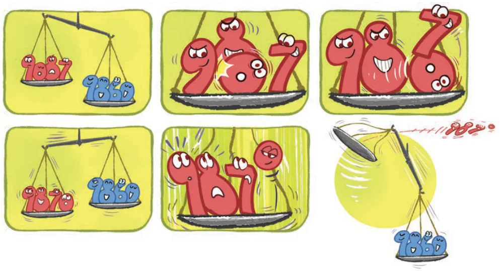
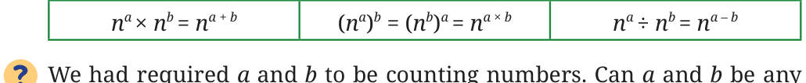

Imagine a line of length 16 units. Erasing half of it would result in
\(2^4 \div 2 = \frac{2 \times 2 \times 2 \times 2}{2} = 2 \times 2 \times 2 = 2^3 = 8\) units.
Erasing half one more time would result in,
\((2^4 \div 2) \div 2 = 2^4 \div 2^2 = \frac{2 \times 2 \times 2 \times 2}{2 \times 2} = 2 \times 2 = 2^2 = 4\) units.
Halving 16 cm three times may be written as,
\(2^4 \div 2^3 = \frac{2 \times 2 \times 2 \times 2}{2 \times 2 \times 2} = 2 = 2^1 = 2\) units.
From this we can see that
\(2^4 \div 2^3 = 2^{4-3} = 2^1\).
What is \(2^{100} \div 2^{25}\) in powers of 2?
In a generalised form,
\(n^a \div n^b = n^{a-b}\),
where \(n \ne 0\) and a and b are counting numbers and \(a > b\).
We have not covered the case when the exponent is 0; for example, what is \(2^0\)?
Let us define \(2^0\) in a way that the generalised form above holds true.
\(2^0 = 2^{4-4} = 2^4 \div 2^4 = \frac{2 \times 2 \times 2 \times 2}{2 \times 2 \times 2 \times 2} = 1\).
In fact for any letter number a
\(2^0 = 2^{a-a} = 2^a \div 2^a = 1\).
In general,
\(x^a \div x^a = x^{a-a} = x^0\), and so
\(1 = x^0\),
where \(x \ne 0\) and a is a counting number.
When Zero is in Power!

When a line of length \(2^4\) units is halved 5 times,
\(2^4 \div 2^5 = \frac{2 \times 2 \times 2 \times 2}{2 \times 2 \times 2 \times 2 \times 2} = \frac{1}{2}\) units.
Using the generalised form, we get \(2^4 \div 2^5 = 2^{(4-5)} = 2^{-1}\).
So, \(2^{-1} = \frac{1}{2}\).
When a line of length \(2^4\) units is halved 10 times, we get \(2^4 \div 2^{10} = 2^{(4-10)} = 2^{-6}\) units.
When expanded, \(2^4 \div 2^{10} = \frac{2 \times 2 \times 2 \times 2}{2 \times 2 \times 2 \times 2 \times 2 \times 2 \times 2 \times 2 \times 2 \times 2} = \frac{1}{2^6} = \frac{1}{64}\),
which is also written as \(2^{-6}\).

Similarly, \(10^{-3} = \frac{1}{10^3}\), \(7^{-2} = \frac{1}{7^2}\), etc.
Can we write \(10^3 = \frac{1}{10^{-3}}\)? We can write,
\(\frac{1}{10^{-3}} = \frac{1}{1/10^3} = 1 \div \frac{1}{10^3} = 1 \times 10^3 = 10^3\).
Similarly, \(7^2 = \frac{1}{7^{-2}}\) and \(4^a = \frac{1}{4^{-a}}\).
In a generalised form,
\(n^{-a} = \frac{1}{n^a}\) and \(n^a = \frac{1}{n^{-a}}\), where \(n \ne 0\).
Consider the following general forms we have identified.

We had required a and b to be counting numbers. Can a and b be any integers? Will the generalised forms still hold true?
Write equivalent forms of the following.
- \(2^{-4}\)
- \(10^{-5}\)
- \((-7)^{-2}\)
- \((-5)^{-3}\)
- \(10^{-100}\) Simplify and write the answers in exponential form.
- \(2^{-4} \times 2^7\)
- \(3^2 \times 3^{-5} \times 3^6\)
- \(p^3 \times p^{-10}\)
- \(2^4 \times (-4)^{-2}\)
- \(8^p \times 8^q\)